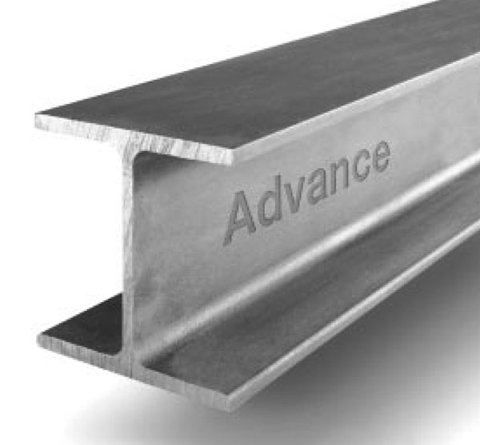

The maritime industry is continually evolving, with advancements in materials playing a crucial role in enhancing the performance, safety, and sustainability of ships and offshore structures. This blog post explores some of the most innovative materials being used in modern shipbuilding and offshore engineering.
Lightweight composite materials are increasingly used in shipbuilding due to their high strength-to-weight ratio and corrosion resistance. These materials help reduce the overall weight of vessels, leading to improved fuel efficiency and lower emissions.
High-strength, low-alloy (HSLA) steels and other advanced steel grades offer superior mechanical properties, including increased toughness and resistance to fatigue. These steels are ideal for constructing ship hulls and offshore platforms that must withstand harsh marine environments.
Aluminum alloys are widely used in the construction of high-speed vessels and smaller boats due to their light weight, excellent corrosion resistance, and ease of fabrication. These materials contribute to the overall performance and durability of marine structures.
Smart coatings, including antifouling and self-healing coatings, play a vital role in protecting marine structures from biofouling, corrosion, and mechanical damage. These coatings enhance the longevity and maintenance efficiency of ships and offshore platforms.
There is a growing emphasis on using eco-friendly materials in shipbuilding to minimize environmental impact. These materials, such as biodegradable composites and low-VOC (volatile organic compound) coatings, help reduce the carbon footprint of maritime operations.
The integration of innovative materials in shipbuilding and offshore structures is driving the industry towards greater efficiency, durability, and environmental sustainability. As research and development continue, we can expect even more advanced materials to emerge, further revolutionizing the maritime sector.